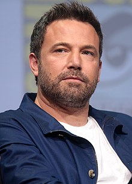
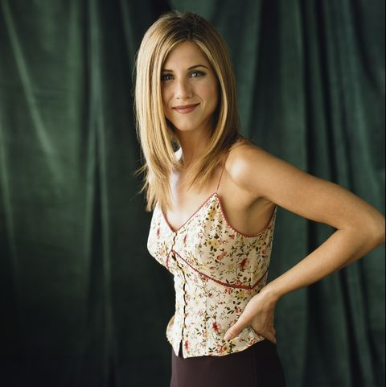

Our Famous Actors/Actresses
Here are our most famous actors and actresses.
Ben Affleck
American actor and filmmaker Benjamin Géza Affleck-Boldt was born on August 15, 1972 in Berkeley, California, and was raised in Cambridge, Massachusetts. His mother, Chris Anne (née Boldt), is a school teacher, and his father, Timothy Byers Affleck, is a social worker; the two are divorced. Ben has a younger brother, actor Casey Affleck, who was born in 1975. He is of mostly English, Irish, German, and Scottish ancestry. His middle name, Géza, is after a Hungarian family friend who was a Holocaust survivor. Affleck wanted to be an actor ever since he could remember, and his first acting experience was for a Burger King commercial, when he was on the PBS mini-series, The Voyage of the Mimi (1984). It was also at that age when Ben met his lifelong friend and fellow actor, Matt Damon. They played little league together and took drama classes together. Ben's teen years consisted of mainly TV movies and small television appearances including Hands of a Stranger (1987) and The Second Voyage of the Mimi (1988). He made his big introduction into feature films in 1993 when he was cast in Dazed and Confused (1993). After that, he did mostly independent films like Kevin Smith's Mallrats (1995) and Chasing Amy (1997) which were great for Ben's career, receiving renowned appreciation for his works at the Sundance film festival. But the success he was having in independent films didn't last much longer and things got a little shaky for Ben. He was living in an apartment with his brother Casey and friend Matt, getting tired of being turned down for the big roles in films and being given the forgettable supporting ones. Since Matt was having the same trouble, they decided to write their own script, where they could call all the shots. So, after finishing the script for Good Will Hunting (1997), they gave it to their agent, Patrick Whitesell, who showed it to a few Hollywood studios, finally being accepted by Castle Rock. It was great news for the two, but Castle Rock wasn't willing to give Ben and Matt the control over the project they were hoping for. It was friend Kevin Smith who took it to the head of Miramax who bought the script giving Ben and Matt the control they wanted and, in December 5, 1997, Good Will Hunting (1997) was released, making the two unknown actors famous. The film was nominated for 9 Academy Awards and won two, including Best Original Screenplay for Ben and Matt. The film marked Ben's breakthrough role, in which he was given for the first time the chance to choose roles instead of having to go through grueling auditions constantly. Affleck chose such roles in the blockbusters Armageddon (1998), Shakespeare in Love (1998), and Pearl Harbor (2001). In the early years of the 2000s, he also starred in the box office hits Changing Lanes (2002), The Sum of All Fears (2002), and Daredevil (2003), as well as the disappointing comedies Gigli (2003) and Surviving Christmas (2004). While the mid 2000s were considered a career downturn for Affleck, he received a Golden Globe nomination for his performance in Hollywoodland (2006). In the several years following, he played supporting roles, including in the films Smokin' Aces (2006), He's Just Not That Into You (2009), State of Play (2009), and Extract (2009). He ventured into directing in 2007, with the thriller Gone Baby Gone (2007), which starred his brother, Casey Affleck, and was well received. He then directed, co-wrote, and starred in The Town (2010), which was named to the National Board of Review Top Ten Films of the year. For the political thriller Argo (2012), which he directed and starred in, Affleck won the Golden Globe Award and BAFTA Award for Best Director, and the Academy Award, Golden Globe Award, and BAFTA Award for Best Picture (Affleck's second Oscar win). In 2014, Affleck headlined the book adaptation thriller Gone Girl (2014). He starred as Bruce Wayne/Batman in the superhero film Batman v Superman: Dawn of Justice (2016), briefly reprised the character in Suicide Squad (2016), and did so again in Justice League (2017).
Jennifer Aniston
Jennifer Joanna Aniston (born February 11, 1969) is an American actress, producer, and businesswoman. The daughter of actors John Aniston and Nancy Dow, she began working as an actress at an early age with an uncredited role in the 1988 film Mac and Me; her first major film role came in the 1993 horror comedy Leprechaun. Since her career progressed in the 1990s, Aniston has become one of the world's highest-paid actresses. Films with Aniston in the leading role have grossed over $1.6 billion worldwide with 12 of those earning at least $100 million at the box office. Aniston rose to international fame for her role as Rachel Green on the television sitcom Friends (1994–2004), for which she earned Primetime Emmy, Golden Globe, and Screen Actors Guild awards. Her character became widely popular and is regarded as one of the greatest female characters in television history. Aniston has since played starring roles in numerous dramas, comedies and romantic comedies. Her biggest box office successes include Bruce Almighty (2003), The Break-Up (2006), Marley & Me (2008), Just Go with It (2011), Horrible Bosses (2011), and We're the Millers (2013), each of which grossed over $200 million in worldwide box office receipts. Some of her most critically acclaimed film roles include Office Space (1999), The Good Girl (2002), Friends with Money (2006), Cake (2014), and Dumplin' (2018). She returned to television in 2019, producing and starring in the Apple TV+ drama series The Morning Show, for which she won another Screen Actors Guild Award. Aniston has been included in numerous magazines' lists of the world's most beautiful women. Her net worth is estimated to be $300 million. She is the recipient of a star on the Hollywood Walk of Fame and is the co-founder of the production company Echo Films, established in 2008. Aniston has been married twice, first to actor Brad Pitt, to whom she was married for five years, and later to actor Justin Theroux, whom she married in 2015 and later separated from in 2017. Jennifer Joanna Aniston was born on February 11, 1969, in the Sherman Oaks neighborhood of Los Angeles, to Greek-born actor John Aniston and actress Nancy Dow. One of her maternal great-grandfathers, Louis Grieco, was from Italy. Her mother's other ancestry includes English, Irish, Scottish, and a small amount of Greek. Her father's ancestry hails from the Greek island of Crete. Aniston has two half-brothers: John Melick, her older maternal half-brother, and Alex Aniston, her younger paternal half-brother. Aniston's godfather was actor Telly Savalas, one of her father's best friends. As a child she moved to New York City. Despite her father's television career she was discouraged from watching television, though she found ways around the prohibition. When she was six, she began attending a Waldorf school. Her parents split up when she was nine years old. Having discovered acting at age 11 at the Waldorf school, Aniston enrolled in Manhattan's Fiorello H. LaGuardia High School of Music & Art and Performing Arts, where she joined the school's drama society; Anthony Abeson was her drama teacher. She performed in The Sign in Sidney Brustein's Window by Lorraine Hansberry and Three Sisters by Anton Chekhov. Aniston first worked in Off-Broadway productions such as For Dear Life and Dancing on Checker's Grave, and supported herself with part-time jobs which included working as a telemarketer, waitress, and bike messenger. In 1988, she had an uncredited minor role in the critically panned sci-fi adventure film Mac and Me. The next year she appeared on The Howard Stern Show as a spokesmodel for Nutrisystem, and moved back to Los Angeles. She obtained her first regular television role on Molloy in 1990, and appeared in Ferris Bueller, a television adaptation of the 1986 film Ferris Bueller's Day Off; both series were quickly canceled. She starred as a teenager going to summer camp in the made-for-television film Camp Cucamonga (1990), and as a spoiled daughter followed by a vengeful leprechaun in the horror film Leprechaun (1993). A 2014 retrospective from Entertainment Weekly identified Leprechaun as her worst role, and Aniston herself has expressed embarrassment over it. Aniston also appeared in two more failed television comedy series, The Edge and Muddling Through, and guest-starred in Quantum Leap, Herman's Head, and Burke's Law.